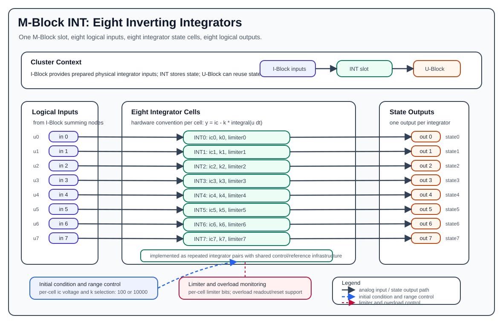

M-Block INT¶
The M-Block INT is the integrator M-Block variant. It provides eight analog integration elements in one M-Block slot and is the standard state-storage block for differential-equation programs. Each element accepts one analog input, integrates it over operating time, and drives one analog output.
In the abstract pybrid computation model, each integrator is configured by an initial condition and an integration rate:
The physical analog integrator cell is inverting. For the physical/logical M-input value u(t) after U-Block, C-Block, and I-Block routing, the hardware-level behavior is approximately:
In practical cluster programs, route signs are therefore chosen so the value arriving at the integrator input produces the intended mathematical derivative. For example, a negative routed constant can produce a positive rising ramp at the observed output.

Hardware Role¶
The INT block is part of the cluster-local analog computation loop:
- The I-Block forms the logical M-Block input values by summing weighted lane currents.
- The INT block consumes those logical input values as physical integrator inputs.
- The INT block produces analog state outputs on the M-Block output path.
- The U-Block can then select those state outputs again as sources for later routes.
The INT block does not perform source selection, coefficient weighting, lane routing, or summation. Those functions are handled by the U-Block, C-Block, T-Block, and I-Block. The INT block receives already prepared analog input signals and integrates them with the inverting hardware convention.
Element Organization¶
One INT block contains eight integrator elements:
| Integrator | Input | Output | Initial condition source | Range control | Limiter control |
|---|---|---|---|---|---|
0 |
input 0 |
output 0 |
ic[0] |
k[0] |
limiter 0 |
1 |
input 1 |
output 1 |
ic[1] |
k[1] |
limiter 1 |
2 |
input 2 |
output 2 |
ic[2] |
k[2] |
limiter 2 |
3 |
input 3 |
output 3 |
ic[3] |
k[3] |
limiter 3 |
4 |
input 4 |
output 4 |
ic[4] |
k[4] |
limiter 4 |
5 |
input 5 |
output 5 |
ic[5] |
k[5] |
limiter 5 |
6 |
input 6 |
output 6 |
ic[6] |
k[6] |
limiter 6 |
7 |
input 7 |
output 7 |
ic[7] |
k[7] |
limiter 7 |
For integrator i:
input = i
output = i
ic = configured initial condition for element i
k = configured integration rate for element i
Unlike the MUL and MDR blocks, the INT block does not expose separate product outputs, nonlinear-result outputs, or ID path outputs. Every logical output is the state output of the integrator with the same index.
Integrator Cell Structure¶
Each integrator element contains one analog integration path:
- The input signal is the prepared physical/logical integrator input from the I-Block.
- The integration capacitor/state node stores the analog state during operation.
- The initial-condition path can load the configured start value before or at the beginning of a run.
- The range-selection path selects the integration rate.
- The limiter path can constrain the integrator output when enabled.
- Overload detection monitors whether the state leaves the valid analog operating range.
- Digital control infrastructure provides range selection, initial-condition generation, limiter control, overload readout/reset, and board identification.
At documentation level, one integrator cell can be understood as:
physical input -> integrator core -> state output
^ |
| +-> overload monitor
initial condition
range selection
limiter control
The hardware implementation groups the eight integrators as four repeated pairs, but the public programming model exposes eight independent elements.
Initial Conditions¶
Each integrator has a configurable initial condition, ic, in the normalized analog range:
The initial-condition subsystem generates one analog initial-condition voltage per integrator. During configuration/run setup, that value is applied to the corresponding integrator state path so the integrator starts from the requested state.
In pybrid, the default initial condition is:
Use nonzero initial conditions when the modeled differential equation starts away from the origin, for example oscillator displacement, velocity, or a stored state inherited from a previous run.
Initial Condition Resolution¶
The initial condition is generated by a 12-bit DAC spanning the full [-1.0, +1.0] range, so one step (LSB) is 2 / 4095 ≈ 4.884e-4. A requested value is rounded to the nearest step.
Because 0.0 lies exactly between two steps, it cannot be set exactly:
| Hardware version | Actual value for ic = 0.0 |
|---|---|
| 1.1 | -2.44e-4 (half an LSB below zero) |
| 1.0 | +2.44e-4 (half an LSB above zero) |
Values outside [-1.0, +1.0] are rejected with a configuration error; they are not clamped to the range limit.
Integration Rate¶
Each integrator has a configurable integration rate k. The public pybrid model supports two rates:
| Mode | k value |
Typical use |
|---|---|---|
| fast | 10000 |
short, fast dynamics or normal LUCIDAC-style operation |
| slow | 100 |
slower dynamics or longer observation windows |
Only these two values are accepted. Any other k is rejected with a configuration error.
In pybrid, the default rate is:
In pybrid, setting an element's k to 100 selects the slow range:
The configured rate scales the slope of the output for a constant physical input. A larger k produces a faster-changing output for the same input signal. Because the hardware integrator is inverting, verify route signs when translating a mathematical equation into C-Block coefficients.
Example physical ramp relationship:
To produce a positive observed ramp with the same k, route a physical INT input of approximately -0.1.
Limiters¶
The INT block provides one limiter-enable control per integrator. In pybrid this is represented as:
When a limiter bit is enabled, the corresponding integrator output is clamped at ±0.84, not at the full ±1.0 range. Use this for programs that intentionally need bounded state behavior, such as nonlinear oscillators or experiments where state excursions must not grow without bound.
The limiter requires integrator hardware version 1.1 or newer. On version 1.0 the limiter setting is ignored without an error.
Reading a clamped integrator
While an integrator sits at its limiter clamp, its held value decays quickly once the machine enters HALT. Final values (run.final_values) are read after the run has switched to HALT, so they report a wrong value for a clamped integrator. To observe a limited integrator, stream its signal during the run instead of relying on the final value.
The limiter is not a substitute for proper model scaling. A program should still keep its normal operating trajectory inside the valid analog range. Treat limiter engagement as part of the model design, not as a general overflow recovery mechanism.
Overload Monitoring¶
Each integrator output is monitored for overload. The block also has shared overload reference generation and reset/readout support.
Avoid these conditions:
abs(input)beyond the normalized analog range.abs(output)beyond the normalized analog range.- initial conditions outside
[-1.0, +1.0](these are rejected). - slopes that drive the state to the rail before the planned run finishes.
- relying on a limiter to hide incorrect equation scaling.
Overload should be treated as an invalid computation condition. If an integrator reaches an invalid range, the measured state no longer represents the intended mathematical state. Reconfigure, rescale the analog program, reduce the operating time, reduce k, or enable an intentional limiter where appropriate.
Input And Output Polarity¶
The INT block documentation should distinguish between mathematical derivatives and physical/cluster signal polarity. The abstract computation equation describes the intended state update. The value at the physical integrator input is produced by the U-Block, C-Block, and I-Block path before it reaches the INT cell.
The hardware integrator is inverting. Existing pybrid examples and verification code account for that convention by using route signs that produce the desired measured state slope. For example, routing a negative constant into an integrator can produce a positive ramp at the output.
When documenting an analog program, state both pieces explicitly when needed:
- The mathematical derivative, such as
dx/dt = v. - The route coefficient used to produce the required physical input polarity.
pybrid Model¶
In pybrid, the integrator block is represented by MIntBlock:
MIntBlock is registered as an M-Block type and contains eight ComputationElement[Integration] entries:
Each integrator computation has two user-visible parameters:
The block also stores one limiter bit per integrator:
During serialization, pybrid emits:
- an integrator configuration item containing
idx,ic, andkfor every element. - a limiter configuration item containing
idxandenablefor every limiter bit.
On reset, pybrid restores:
In the standard LUCIDAC-style cluster model, the INT block is the first M-Block slot:
With that slot offset, local INT inputs and outputs map directly to cluster-level M lanes:
| Local INT signal | Cluster-level M lane |
|---|---|
input 0..7 |
M input 0..7 |
output 0..7 |
M output 0..7 |
If an INT block is installed in a different M-Block slot, use that slot's M-lane offset instead of assuming 0.
The general mapping rule is:
Minimal pybrid Example¶
This example configures integrator 0 with an initial condition of 0.0, fast integration, and a constant physical input routed through the cluster input path.
cluster.ublock.reset()
cluster.cblock.reset()
cluster.iblock.reset()
itor_idx = 0
cluster.m0block.elements[itor_idx].ic = 0.0
cluster.m0block.elements[itor_idx].k = 10_000
cluster.m0block.limiters[itor_idx] = False
cluster.ublock.set_constant(1.0)
cluster.ublock.connect(15, 0, force=True)
cluster.cblock.elements[0].factor = -0.1
cluster.iblock.connect(0, itor_idx, force=True)
The negative coefficient is intentional for the common inverting-integrator convention: it can produce a positive observed ramp at the integrator output. Adjust the sign according to the mathematical equation and the surrounding route polarity.
Practical Use Notes¶
- Use INT outputs as state variables in differential-equation models.
- Use
icto set the starting state before the run begins. - Use
k = 10000for fast dynamics andk = 100when the model needs more physical run time. - Keep states and inputs scaled to the normalized analog range.
- Account for the inverting hardware convention when selecting route coefficients.
- Enable limiters only when bounded state behavior is part of the intended model, and remember they clamp at
±0.84. - Stream limited integrators instead of reading their final values.
- Treat overload as a configuration or scaling problem, not as a valid saturated result.